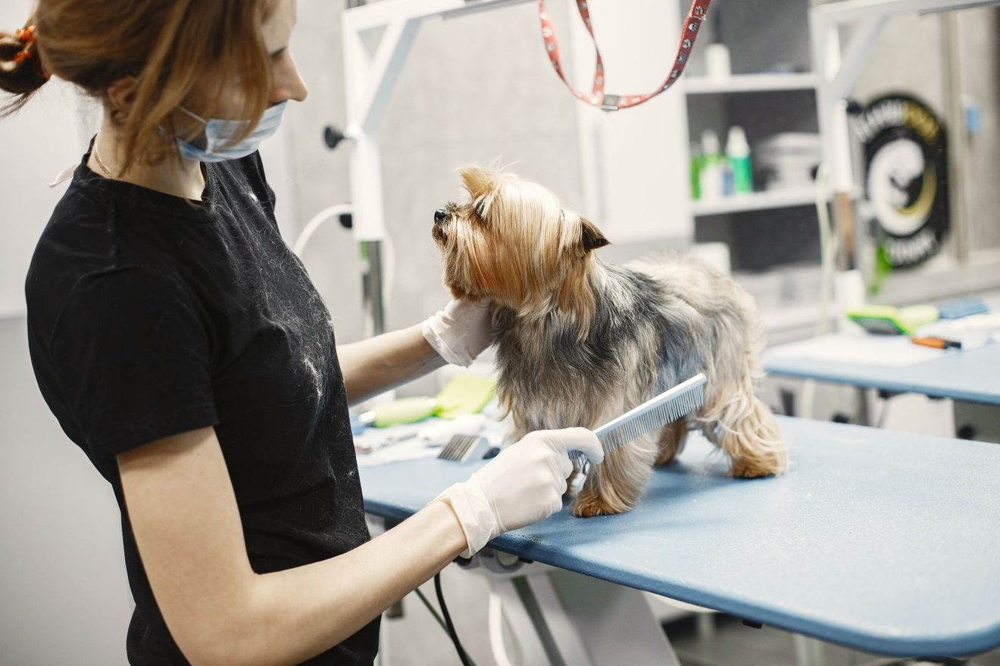
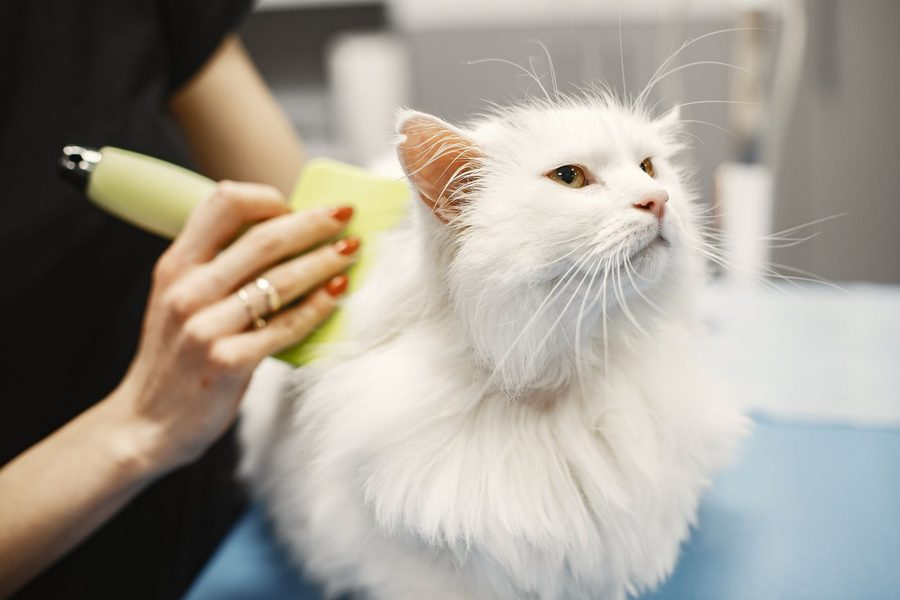
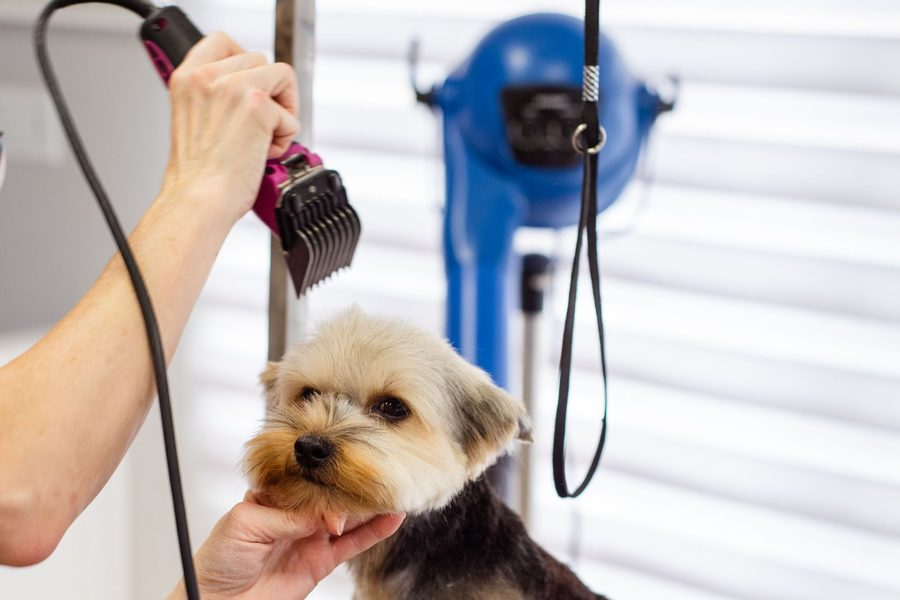
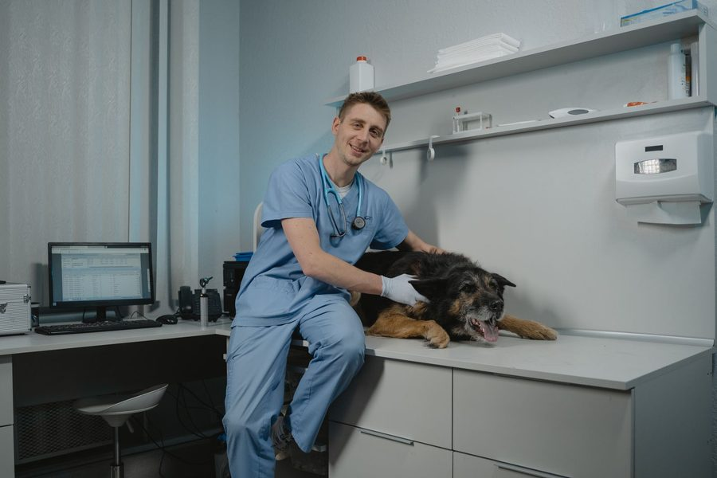
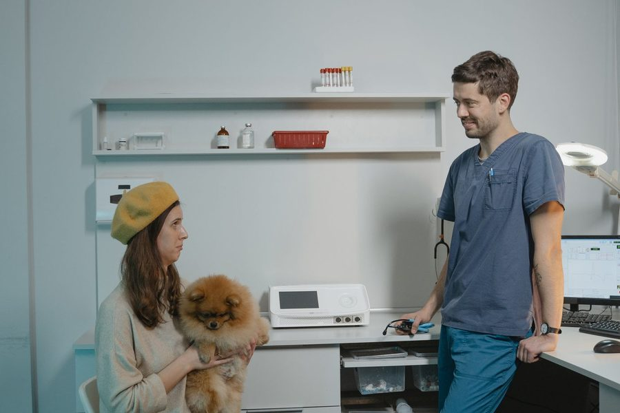

Urgencias 24 h
Veterinario y auxiliar dentro de la clínica a cualquier hora. Llama antes de salir: preparamos sala, vía y medicación mientras llegas, y entras directo a la mesa de exploración.
Clínica veterinaria en Madrid · Siempre a tu lado
Cuidamos la salud de tu mejor amigo con cariño y sin prisas: consulta, vacunas, cirugía y hospitalización, con un equipo que te explica cada paso y te acompaña. Y si algo urge, aquí estamos las 24 horas.
Abierto ahora
Orientación en 10 segundos
Dinos qué animal es y qué has notado. Te decimos si esto es para hoy, para ahora mismo o puede esperar a una cita tranquila.
Esto es orientación, no un diagnóstico. Solo una exploración presencial permite valorar a tu animal. Ante la duda, llama.
Servicios
Somos una clínica de medicina y cirugía. No prometemos todas las especialidades del mundo: hacemos bien lo que ves aquí y, cuando un caso exige a alguien más, te decimos a quién derivarte.

Veterinario y auxiliar dentro de la clínica a cualquier hora. Llama antes de salir: preparamos sala, vía y medicación mientras llegas, y entras directo a la mesa de exploración.
Exploración completa sin reloj en la mano. Si algo no encaja, lo investigamos hasta tener una explicación que se sostenga.
Calendario adaptado a la edad, la raza y la vida real de tu animal. Te avisamos nosotros cuando toca; no tienes que acordarte.
Implantación, alta en el registro autonómico y pasaporte europeo en la misma visita, con la documentación lista para viajar.
Protocolo individual por paciente y constantes vigiladas minuto a minuto. El dolor se trata antes de que aparezca, no cuando ya está.
Quirófano propio, instrumental esterilizado con control de cada ciclo y un cirujano responsable del caso de principio a fin.
Boxes separados para perros y gatos, control de constantes por turnos y parte diario para ti, sin tener que perseguirnos.
Peluquería canina y felina
Baño, corte y cepillado para perros y gatos, con manos veterinarias. No es solo estética: en cada sesión revisamos piel, oídos y uñas, y detectamos a tiempo bultos, parásitos o irritaciones que de otro modo pasarían desapercibidos.



¿Toca revisión y baño el mismo día? Pídelos juntos y así viene una sola vez.
Tu visita, paso a paso
Así funciona una visita con nosotros, desde que descuelgas el teléfono hasta que volvéis a casa. Sin sorpresas en la factura ni en el pronóstico.
Cuatro preguntas para saber si vienes ahora o mañana. Si es urgente, te damos indicaciones para el trayecto: cómo moverlo, qué no darle, qué traer contigo.
Constantes y valoración inicial nada más entrar. El orden de atención lo marca la gravedad, no la hora de llegada. Si tu caso pasa por delante, te lo explicamos; si pasa otro delante, también.
Te contamos qué sospechamos, qué prueba lo confirma y cuánto cuesta. Firmas el presupuesto y el consentimiento con la información delante. Nada se hace sin tu autorización, salvo maniobras para salvar la vida.
Informe escrito, medicación con horarios claros y señales de alarma por las que debes volver. Y una llamada nuestra a las 48 horas para comprobar cómo va.
Instalaciones
Puedes venir a conocerla sin cita: te enseñamos dónde se espera, dónde exploramos y dónde se quedan los que ingresan. Ver el sitio con tus propios ojos tranquiliza más que cualquier folleto.




Lo que cuentan las familias
Llegamos a las tres de la mañana con la perra convulsionando. Nos atendieron en el momento y, mientras la estabilizaban, alguien salió cada veinte minutos a contarnos cómo iba. Eso no se paga.
Me dieron el presupuesto de la operación por escrito antes de entrar a quirófano y la factura final fue exactamente esa. Después de dos clínicas anteriores, casi me sorprendió.
Mi gata es imposible en el veterinario. La sala felina y que no la forzaran cambiaron la visita entera: salió andando sola del transportín.
Estuvo cinco días ingresado tras la cirugía. Llamada todos los días a la misma hora, con lo bueno y lo malo. Volví a dormir sabiendo que alguien estaba con él de madrugada.
Testimonios de muestra mientras recopilamos los reales de Google.
Equipo
Un caso, un veterinario responsable. Te lo presentamos el primer día y es quien firma el informe, te llama y responde tus dudas después.
Herramientas gratuitas
Tres utilidades que hemos hecho para ti. No hay que registrarse, no guardan nada y son gratis. Orientan, no diagnostican: para eso estamos nosotros.
Busca un alimento y te decimos al momento si es seguro, si hay que vigilar o si es tóxico, con los síntomas y qué hacer.
Abrir el consultor PlanificaResponde tres preguntas y te generamos su calendario de vacunas, desparasitaciones y revisiones. Puedes imprimirlo.
Generar el calendario CompruebaCalcula cuánto debería comer al día y comprueba si su peso está dentro del rango de su raza.
Abrir la calculadoraAhora mismo hay alguien de guardia
Dificultad para respirar, vientre hinchado y duro, convulsiones, sangrado que no para, un golpe fuerte o un atropello: son urgencias reales. Llama y sal hacia aquí.
Calle de Alcalá, 415, Madrid · Aparcamiento en la puerta
Preguntas frecuentes
Si la tuya no está aquí, escríbenos: contestamos aunque no vengas.
Sí. Hay equipo de guardia las 24 horas los 365 días. Aun así, llama antes de salir de casa: mientras llegas preparamos la sala, el material y la medicación, y ganamos los minutos que más pesan.
La consulta de urgencia tiene un precio cerrado que te decimos por teléfono antes de venir. Cualquier prueba, ingreso o cirugía se presupuesta por escrito y se aprueba antes de hacerse. No iniciamos ningún procedimiento con coste sin tu autorización.
Siempre que su seguridad y la del equipo lo permitan, sí. En muchos casos el animal se maneja mejor contigo delante. En quirófano y en zona de hospitalización no es posible, pero te informamos por teléfono en cada cambio relevante.
La hospitalización cuenta con vigilancia presencial 24 horas, control de constantes y registro de cada dosis administrada. Recibes un parte diario y puedes concertar visita en el horario acordado con el veterinario responsable del caso.
Emitimos toda la documentación clínica y las facturas desglosadas que piden las aseguradoras. Dinos con cuál trabajas al pedir cita y te indicamos qué informes necesitarás para el reembolso.
Te damos por escrito las pautas de ayuno, la medicación previa y la hora exacta de ingreso. Antes de cada anestesia se hace evaluación preanestésica y se monitoriza de forma continua durante toda la intervención y el despertar.
Contacto
Si es urgente, llama: el formulario lo leemos en horario de consulta. Para lo demás, escríbenos con calma y te respondemos el mismo día.
Mapa desactivado hasta aceptar cookies